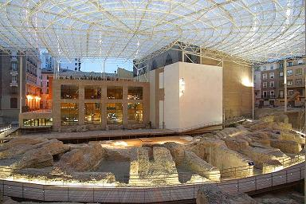

|
TEATRO

Es uno de los mayores teatros de la Hispania. Tenia un aforo de 6.000 personas para una ciudad que contaba con 18.000 habitantes. Se comenzó a construir en la época de Tiberio y su construcción se prolongó hasta el mandato de Claudio. Se mantuvo en funcionamiento hasta el siglo III, momento en el que se inicio su expoliación y sus materiales son usados en el amurallamiento. A diferencia de otros teatros, este de Caesaraugusta se construyó en llano, siguiendo el modelo del teatro de Marcelo en Roma. Sus restos se descubrieron en 1972 con la construcción de un inmueble en la calle Verónica.
Arquitectónicamente se trata de un edificio aéreo a diferencia de los teatros que apoyan su graderío en la ladera de una montaña. Ello origina la existencia de cámaras ciegas y galerías abovedadas sobre las que se descargaba su ingente peso. A través de estas últimas se efectuaba un complejo sistema de circulación que tenía tres ejes principales en sus accesos. Recientemente los trabajos arqueológicos han puesto de manifiesto parte de la escena. Ver Teatros romanos
|